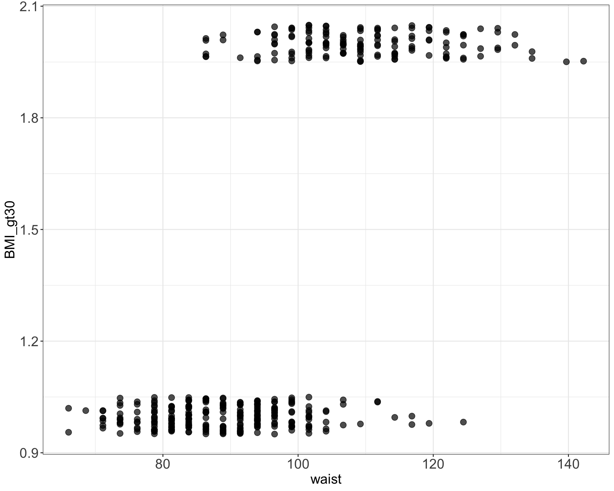
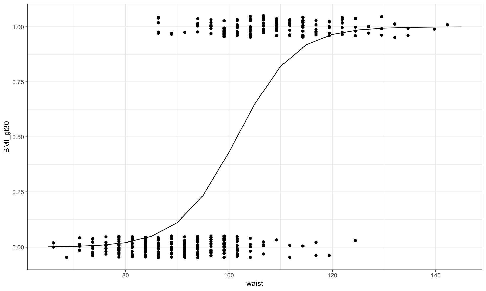

In other words, we are finding the best-fitting straight line to build a model to represent the relationship between plasma volume (\(Y\)) and explanatory body weight variable (\(x\))
The model can be written as:
\[
Y_i = \alpha + \beta x_i + \epsilon_i,
\]
where:
\(x\): is predictor, feature, exposure variable, explanatory variable, independent variable,covariate
\(Y\): is response, outcome, dependent variable
\(\alpha\): intercept (coefficient)
\(\beta\): regression coefficient
\(\epsilon_i\): random error term
The fitted model gives predicted values:
\[
\hat{y}_i=\hat{\alpha}+\hat{\beta}\cdot x_i
\] In our case:
\[
\hat{y}_i=0.086+ 0.044 \cdot x_i
\]
Least squares
estimating coefficients by minimizing RSS
Let
\[
\hat{y}_i=\hat{\alpha}+\hat{\beta}x_i
\]
be the fitted value for observation \(i\).
The residual is
\[
e_i = y_i-\hat{y}_i
\]
The residual sum of squares is
\[
RSS = \sum_{i=1}^n e_i^2
\]
Least squares chooses \(\hat{\alpha}\) and \(\hat{\beta}\) to minimize RSS.
Another way to view the linear model
Expected-value interpretation
Another way to think about a linear regression model is that it describes the expected value of the outcome for a given value of the predictor.
\[
E(Y \mid X=x)=\alpha+\beta x
\]
Individuals with the same value of the predictor can have different outcomes. The regression line describes their expected, or average, outcome.
Linear regression estimates the model parameters \(\alpha\) and \(\beta\): \(Y_i = \alpha + \beta x_i + \epsilon_i\)
The slope \(\hat{\beta}=0.0436\) describes the expected change in plasma volume for a one-unit increase in body weight.
Increasing weight by 5 kg corresponds to \(3.14 - 2.92 = 0.22\) increase in plasma volume. Increasing weight by 1 kg corresponds \(2.96 - 2.92 = 0.04\) increase in plasma volume
Linear regression estimates the model parameters \(\alpha\) and \(\beta\): \(Y_i = \alpha + \beta x_i + \epsilon_i\)
The intercept \(\hat{\alpha}=0.0857\) is the expected outcome when the predictor equals zero. It is not always meaningful.
Inference
Hypothesis testing in linear regression
We can test whether a predictor is associated with the outcome.
Hypotheses:
\(H_0: \beta = 0\) — no linear association between \(X\) and \(Y\)
\(H_a: \beta \neq 0\) — a non-zero linear association
Test statistic:
\[
t = \frac{\hat{\beta}}{SE(\hat{\beta})}
\]
Compares the estimated coefficient to its standard error.
Under \(H_0\), follows a t-distribution with \(n-p\) degrees of freedom.
A larger absolute \(t\)-value provides stronger evidence against \(H_0\).
The p-value measures how unusual a result this extreme (or more extreme) would be if \(H_0\) were true.
Statistical significance does not necessarily imply biological importance or predictive usefulness.
Predictions
\[
\hat{y}_i=0.086+ 0.044 \cdot x_i
\]
Code
# model plasma using weightdata_plasma <-data.frame(plasma = plasma, weight = weight)model <-lm(plasma ~ weight, data = data_plasma)# use model for predictionsdata_new <-data.frame(weight =60)predict(model, newdata = data_new)
1
2.702645
R^2 and R^2(adj)
measuring the model fit
Measure of model fit is given by \[R^2 = 1 - \frac{RSS}{TSS}\] where:
RSS is the residual sum-of-squares the fitted model of interest
TSS is the sum of squares of the null model
In the case of multiple linear regression we are using the adjusted version of\(R^2\) to account for multiple predictors: \[R^2(adj) = 1 - (1-R^2)\frac{n-1}{n-p-1}\]
Multiple regression
Multiple regression
Assumptions of linear regression
Ordinary linear regression relies on several assumptions:
Linearity: The expected outcome is a linear combination of the predictors.
Independence: Errors are independent across observations.
Constant variance (homoscedasticity): Errors have similar variance across fitted values.
Normality: Errors are normally distributed (important for classical small-sample inference).
No perfect multicollinearity: Predictors are not exact linear combinations of one another.
Generalized Linear Models (GLMs)
Linear models describe expected outcomes
In the linear model, we describe the expected value of the outcome:
For these outcomes, the expected value has restrictions:
probabilities must be between 0 and 1
expected counts must be positive
Restrictions
Example
Fitting a regression line to binary data yields predicted values that could take any value, including \(<0\),
Example of fitting linear model to binary data, to model obesity status coded as 1 (Yes) and 0 (No) with waist variable. Linear model does not fit the data well in this case and the predicted values can take any value, not only 0 and 1.
This ensures that the fitted probabilities always lie between 0 and 1.

Logistic regression
R
In R we can use glm() function to fit GLM models:
# fit logistic regression modellogmodel_1 <-glm(obese ~ waist, family =binomial(link="logit"), data = data_diabetes)# print model summaryprint(summary(logmodel_1))
##
## Call:
## glm(formula = BMI_gt30 ~ waist, family = binomial(link = "logit"),
## data = data_diabetes)
##
## Coefficients:
## Estimate Std. Error z value Pr(>|z|)
## (Intercept) -18.29349 1.83541 -9.967 <2e-16 ***
## waist 0.18013 0.01843 9.774 <2e-16 ***
## ---
## Signif. codes: 0 '***' 0.001 '**' 0.01 '*' 0.05 '.' 0.1 ' ' 1
##
## (Dispersion parameter for binomial family taken to be 1)
##
## Null deviance: 518.24 on 394 degrees of freedom
## Residual deviance: 282.93 on 393 degrees of freedom
## (8 observations deleted due to missingness)
## AIC: 286.93
##
## Number of Fisher Scoring iterations: 6
Logistic regression
R

Fitted logistic model to diabetes data given the 130 study participants and using waist as explantatory variable to model obesity status.
Logistic regression
Inference & Predictions
As in linear regression, we can test whether a predictor is associated with the outcome by testing
\[
H_0:\beta_j=0.
\]
# fit logistic regression modellogmodel_1 <-glm(BMI_gt30~ waist, family =binomial(link="logit"), data = data_diabetes)summary(logmodel_1)
Call:
glm(formula = BMI_gt30 ~ waist, family = binomial(link = "logit"),
data = data_diabetes)
Coefficients:
Estimate Std. Error z value Pr(>|z|)
(Intercept) -18.29349 1.83541 -9.967 <2e-16 ***
waist 0.18013 0.01843 9.774 <2e-16 ***
---
Signif. codes: 0 '***' 0.001 '**' 0.01 '*' 0.05 '.' 0.1 ' ' 1
(Dispersion parameter for binomial family taken to be 1)
Null deviance: 518.24 on 394 degrees of freedom
Residual deviance: 282.93 on 393 degrees of freedom
(8 observations deleted due to missingness)
AIC: 286.93
Number of Fisher Scoring iterations: 6
Logistic regression
Deviance (rather than \(R^2\))
Deviance measures how well a model fits the observed data relative to a perfectly fitting (saturated) model. Smaller deviance indicates better fit.
Deviance can also be used to compare nested models, for example to test whether adding an explanatory variable improves the model.
In a likelihood ratio test, the test statistic is the difference in deviance between the reduced and full models:
\[
\Delta D = D_{\text{reduced}} - D_{\text{full}}.
\]
Under the null hypothesis,
\[
\Delta D \approx \chi^2_{df},
\]
where \(df\) is the difference in the number of estimated parameters between the two models.
Logistic regression
Odds ratio
In logistic regression, we often interpret coefficients by exponentiating them:
\[
OR = e^{\hat{\beta}}.
\]
This gives an odds ratio.
For example, if \(\hat{\beta}=0.18\),
\[
e^{0.18}\approx1.2.
\]
This means that for each one-unit increase in waist, the odds of obesity are multiplied by about 1.2.
# fit logistic regression modellogmodel_1 <-glm(BMI_gt30~ waist, family =binomial(link="logit"), data = data_diabetes)# print model summaryprint(summary(logmodel_1))
Call:
glm(formula = BMI_gt30 ~ waist, family = binomial(link = "logit"),
data = data_diabetes)
Coefficients:
Estimate Std. Error z value Pr(>|z|)
(Intercept) -18.29349 1.83541 -9.967 <2e-16 ***
waist 0.18013 0.01843 9.774 <2e-16 ***
---
Signif. codes: 0 '***' 0.001 '**' 0.01 '*' 0.05 '.' 0.1 ' ' 1
(Dispersion parameter for binomial family taken to be 1)
Null deviance: 518.24 on 394 degrees of freedom
Residual deviance: 282.93 on 393 degrees of freedom
(8 observations deleted due to missingness)
AIC: 286.93
Number of Fisher Scoring iterations: 6
Regularization
Regularized linear models
definition
Regularized regression expands on the regression by adding a penalty term(s) to shrink the model coefficients of less important features towards zero.
This can help to prevent overfitting and improve the accuracy of the predictive model.
Depending on the penalty added, we talk about Ridge, Lasso or Elastic Nets regression.
Regularized regression
Ridge regression
Previously we saw that the least squares fitting procedure estimates model coefficients \(\beta_0, \beta_1, \cdots, \beta_p\) using the values that minimize the residual sum of squares: \[RSS = \sum_{i=1}^{n} \left( y_i - \beta_0 - \sum_{j=1}^{p}\beta_jx_{ij} \right)^2\]
In regularized regression the coefficients are estimated by minimizing slightly different quantity. Specifically, in Ridge regression we estimate \(\hat\beta^{L}\) that minimizes \[\sum_{i=1}^{n} \left( y_i - \beta_0 - \sum_{j=1}^{p}\beta_jx_{ij} \right)^2 + \lambda \sum_{j=1}^{p}\beta_j^2 = RSS + \lambda \sum_{j=1}^{p}\beta_j^2 \tag{1}\]
where:
\(\lambda \ge 0\) is a tuning parameter to be determined separately e.g. via cross-validation
lasso regression seeks coefficient estimates that fit the data well, by making RSS small
however, the second term \(\lambda \sum_{j=1}^{p}\beta_j^2\), called shrinkage penalty is small when \(\beta_1, \cdots, \beta_p\) are close to zero, so it has the effect of shrinking the estimates of \(\beta_j\) towards zero.
the tuning parameter \(\lambda\) controls the relative impact of these two terms on the regression coefficient estimates
when \(\lambda = 0\), the penalty term has no effect
as \(\lambda \rightarrow \infty\) the impact of the shrinkage penalty grows and the ridge regression coefficient estimates approach zero
Regularized regression
Ridge regression
Example of Ridge regression to model BMI using age, chol, hdl and glucose variables: model coefficients are plotted over a range of lambda values, showing how initially for small lambda values all variables are part of the model and how they gradually shrink towards zero for larger lambda values.
Bias-variance trade-off
Ridge regression can improve prediction by accepting a little more bias in exchange for lower variance.
Bias: error from a model that is too simple
→ may miss real patterns
→ underfitting
Variance: error from a model that is too sensitive to the training data
→ may capture noise
→ overfitting
Regularization reduces flexibility by shrinking coefficients
→ often lower variance
→ better prediction on new data
Figure 1: Bias-variance trade-off. Increasing model flexibility decreases bias but increases variance. Prediction error is minimized at an intermediate level of complexity.
Ridge vs. Lasso
In Ridge regression we minimize: \[\sum_{i=1}^{n} \left( y_i - \beta_0 - \sum_{j=1}^{p}\beta_jx_{ij} \right)^2 + \lambda \sum_{j=1}^{p}\beta_j^2 = RSS + \lambda \sum_{j=1}^{p}\beta_j^2 \tag{2}\] where \(\lambda \sum_{j=1}^{p}\beta_j^2\) is also known as L2 regularization element or \(l_2\) penalty
In Lasso regression, that is Least Absolute Shrinkage and Selection Operator regression we change penalty term to absolute value of the regression coefficients: \[\sum_{i=1}^{n} \left( y_i - \beta_0 - \sum_{j=1}^{p}\beta_jx_{ij} \right)^2 + \lambda \sum_{j=1}^{p}|\beta_j| = RSS + \lambda \sum_{j=1}^{p}|\beta_j| \tag{3}\] where \(\lambda \sum_{j=1}^{p}|\beta_j|\) is also known as L1 regularization element or \(l_1\) penalty
Ridge vs. Lasso
Example of Ridge regression to model BMI using age, chol, hdl and glucose variables: model coefficients are plotted over a range of lambda values, showing how initially for small lambda values all variables are part of the model and how they gradually shrink towards zero for larger lambda values.
Example of Lasso regression to model BMI using age, chol, hdl and glucose variables: model coefficients are plotted over a range of lambda values, showing how initially for small lambda values all variables are part of the model and how they gradually shrink towards zero and are also set to zero for larger lambda values.
Elastic Net
Elastic Net use both L1 and L2 penalties to try to find middle grounds by performing parameter shrinkage and variable selection. \[\sum_{i=1}^{n} \left( y_i - \beta_0 - \sum_{j=1}^{p}\beta_jx_{ij} \right)^2 + \lambda \sum_{j=1}^{p}|\beta_j| + \lambda \sum_{j=1}^{p}\beta_j^2 = RSS + \lambda \sum_{j=1}^{p}|\beta_j| + \lambda \sum_{j=1}^{p}\beta_j^2 \tag{4}\]
Example of Elastic Net regression to model BMI using age, chol, hdl and glucose variables: model coefficients are plotted over a range of lambda values and alpha value 0.1, showing the changes of model coefficients as a function of lambda being somewhere between those for Ridge and Lasso regression.
Elastic Net
In R with glmnet
In the glmnet library we can fit Elastic Net by setting parameters \(\alpha\). Under the hood glmnet minimizes a cost function: \[\sum_{i_=1}^{n}(y_i-\hat y_i)^2 + \lambda \left ( (1-\alpha) \sum_{j=1}^{p}\beta_j^2 + \alpha \sum_{j=1}^{p}|\beta_j|\right )\] where:
\(n\) is the number of samples
\(p\) is the number of parameters
\(\lambda\), \(\alpha\) hyperparameters control the shrinkage
and:
\(\alpha = 0\) corresponds to Ridge regression
\(\alpha=1\) this corresponds to Lasso regression
\(0 < \alpha < 1\) gives Elastic Net regularization, combining both L1 and L2 regularization terms
Logistic Lasso
Logistic regression + Lasso regularization
We estimate set of coefficients \(\hat \beta\) that minimize the combined logistic loss function and the Lasso penalty: